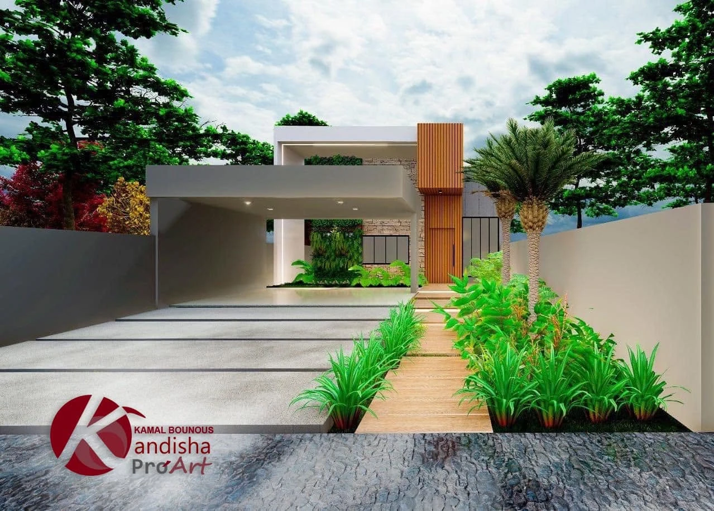

El estudio
Kandisha Pro'Art es el estudio de Kamal Bounous en Tánger.
Un estudio de Tánger, con firma propia
Trabajamos desde el centro de Tánger en viviendas, comercios y espacios de exposición. Cada proyecto sale del estudio con su sello: diseño original, hecho para un cliente y un lugar concretos.
- 100 %
- de recomendaciones en 19 opiniones de Facebook
- 1,4 mil
- personas siguen el trabajo del estudio

Cómo trabajamos
Dentro y fuera, a la vez
La fachada, el jardín y el salón se diseñan juntos, para que la casa se lea como un solo proyecto.
Primero la imagen
Nada se construye sin haberlo visto antes en 3D. Los cambios se hacen en pantalla, no en obra.
Diseño con sello
No repetimos proyectos. Cada diseño es original y lleva la firma del estudio.
Hablemos de su espacio
Llámenos, escríbanos o pase por el estudio. La primera conversación sirve para entender qué necesita.